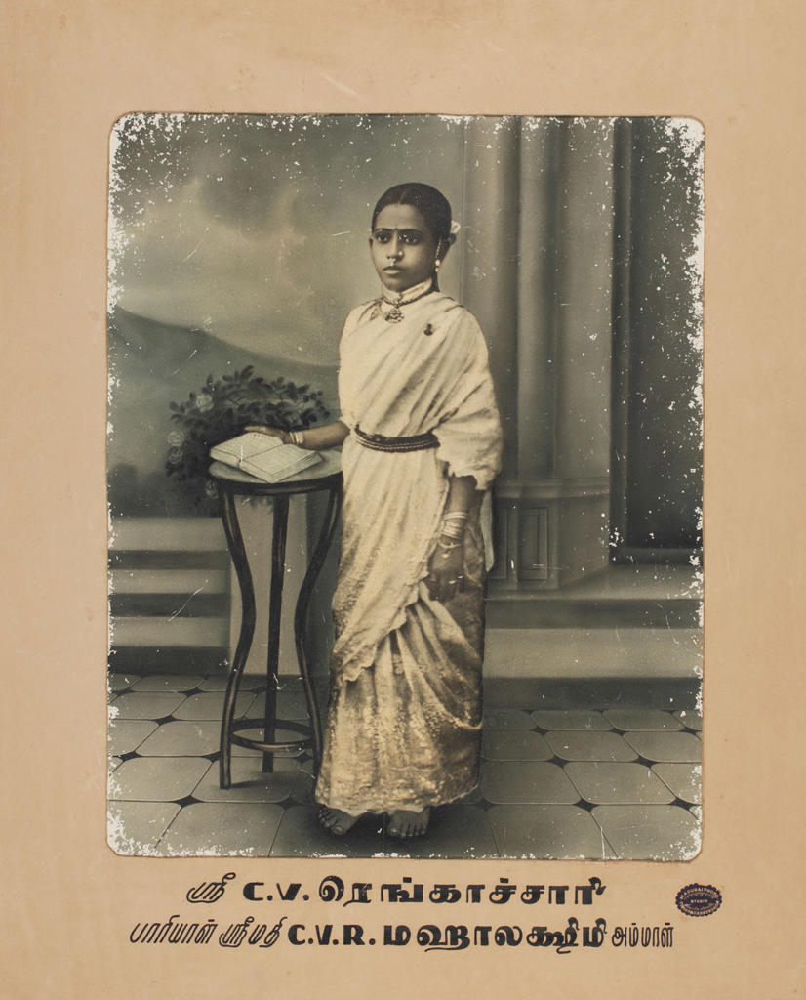
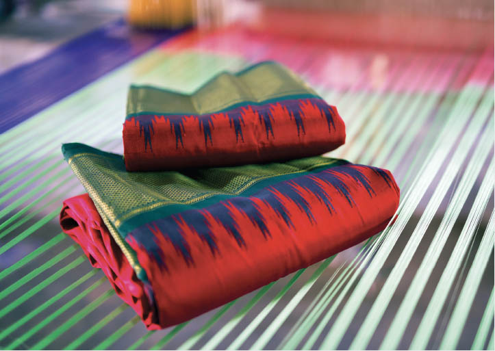
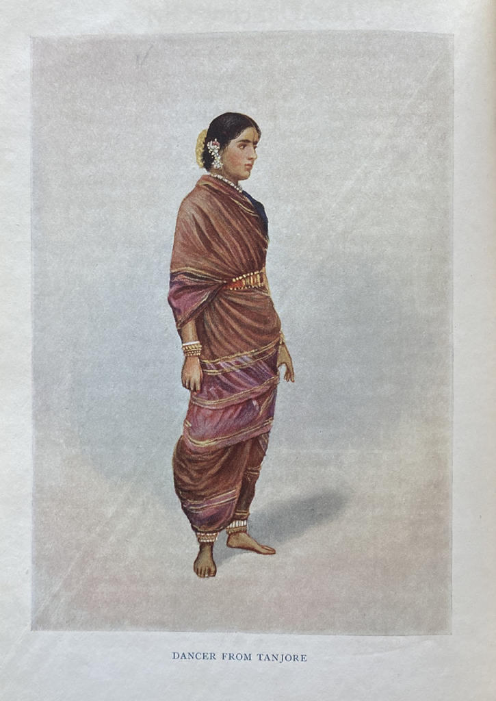

சங்க காலத் தொழில்:
தமிழ்நாட்டின் நெசவுத் தொழிலின் வரலாறு:
தென்னிந்தியாவின் ஜவுளி பாரம்பரியம் சங்க காலத்தைச் சேர்ந்தது (கிமு 1 ஆம் நூற்றாண்டு முதல் கிபி 6 ஆம் நூற்றாண்டு வரை). நறுமணப் பொருட்கள் மற்றும் ரத்தினக் கற்களைத் தவிர, அதன் ராஜ்ஜியங்களின் கருவூலத்தை வளப்படுத்தும் நேர்த்தியாக வடிவமைக்கப்பட்ட துணி. ஜவுளி வர்த்தகத்தில் உள்நாட்டு மற்றும் வெளிநாட்டு பேரரசுகள் லாபம் ஈட்டின. ஆனால் வித்தியாசம் ஆதரவில் இருந்தது. பல பிராந்திய வம்சங்கள் நெசவாளர்கள் அல்லது கைவினைஞர்களின் சமூகங்களை தலைமுறைகளாக ஆதரித்தன, இந்த செயல்பாட்டில் தங்களுக்கான கைவினை மற்றும் கலாச்சார மரபுகளுக்கான நிலையான சுற்றுச்சூழல் அமைப்புகளை உருவாக்குகிறது. காலனித்துவ நிறுவனங்கள், ஒப்பிடுகையில், நிறுவனத்தில்
அதிக பணம் அல்லது நேரத்தை முதலீடு செய்யும் நோக்கில் நுழையவில்லை - அவர்களின் ஆர்வம் மிகவும் நேரடியான வணிகமாக இருந்தது. இன்னும், அவர்கள் மிகவும் லாபகரமாக வெட்டிய ஜவுளி மரபுகளில் அழிக்க முடியாத தாக்கத்தை ஏற்படுத்தினர். ஆங்கிலேயர்கள் 1639 ஆம் ஆண்டில் கோரமண்டல் கடற்கரையின் விவரிக்கப்படாத பகுதியில் மெட்ராஸ் பிரசிடென்சியை நிறுவியபோது, இந்த புதிய வர்த்தக துறைமுகம் உலகில் தங்கள் இடத்தை வரையறுக்கும் வழிகளை அவர்களால் கற்பனை செய்திருக்க முடியாது. ஃபேஷன், மற்றவற்றுடன்.
17 ஆம் நூற்றாண்டில், கோரமண்டல் கடற்கரையில் வர்த்தகம் செய்யப்பட்ட பொருட்களின் கலவையில் ஜவுளி ஆதிக்கம்
செலுத்தியது. இதற்கு ஒரு காரணம், பல நூற்றாண்டுகளாக, சௌராஷ்டிராவிலிருந்து நெசவாளர்களின் இடம்பெயர்வு ஆகும், அவர்கள் இன்றைய தமிழ்நாட்டின்
சில பகுதிகளில் குடியேறினர் (சிலர் சௌராஷ்டிரம் என்று அழைக்கப்படும் கலப்பின மொழியையும் பேசுகிறார்கள்). ஜவுளிகளை வெளுக்க வேண்டும் என்பதால் அவர்கள்
ஆறுகளுக்கு அருகில் நெசவு மையங்களை அமைப்பார்கள்.
திருவண்ணாமலை மாவட்டத்தில் ஓடும் செய்யாற்றின் கரையோரத்தில் தேங்கி நிற்கும் வளமான வண்டல் மண்
அல்லது வண்டல் மண் துணிகளை பதப்படுத்துவதற்கு மிகவும் ஏற்றதாக கருதப்பட்டது. இதனால் மதுராந்தகம், செங்கல்பட்டு, காஞ்சிபுரம் போன்ற ஊர்களில்
நெசவாளர்கள் குவிந்தனர்.காலனித்துவ செல்வாக்கு உள்ளூர் உடை மற்றும் நகைகளுக்கும் விரிவடைந்தது, இது வர்க்கம், சாதி மற்றும் பாலினம் ஆகியவற்றின் சிக்கலான அணிக்குள் உருவானது. சுதந்திர இயக்கம் பின்னர் வரலாற்று மற்றும் குறியீட்டு முக்கியத்துவம் வாய்ந்த தருணங்களுக்கு பங்களித்தது. உதாரணமாக, 1921 ஆம் ஆண்டு மதுரைக்கு விஜயம்
செய்தபோதுதான் முதன்முதலில் எம்.கே.காந்தி தனது முத்திரையாக இருக்கும் இடுப்பு துணியை அணிந்தார்.
காஞ்சீவரம்:
கஞ்சீவரம் புடவைகள் கெட்டி பட்டு அல்லது கனமான பட்டுக்காக அறியப்படுகின்றன, மேலும் அவை முதலில் 15 வண்ண
கலவைகளில் மட்டுமே நெய்யப்பட்டன. நெசவாளர்கள் சேலையின் பளபளப்பை நகரத்தின் வழியாக ஓடும் பாலாற்றின் ஜொலிக்கும் நீருடன் ஒப்பிட்டனர்.
விஜயநகரப் பேரரசின் கிருஷ்ண தேவராயரின் ஆட்சியில் காஞ்சிபுரம் பட்டுகளின் பெரிய அளவிலான தொழில்மயமாக்கல் நடந்தது. காஞ்சீவரம் புடவைகள்
காஞ்சிபுரம் நகரத்தின் பழைய பிரிட்டிஷ் பெயரான கொங்கீவரம் என்பதிலிருந்து அவற்றின் பெயரைப் பெற்றன. 18 ஆம் நூற்றாண்டில் ஆங்கிலேயர்களுக்கும்
பிரெஞ்சுக்காரர்களுக்கும் இடையே நடந்த பிரபலமற்ற கர்நாடகப் போர்களின் போது, நகரம் எரிக்கப்பட்டு, பட்டு நெசவுத் தொழிலை அழிவின் விளிம்பிற்குக் கொண்டு
வந்தது. ஆனால்
அது தன்னைத்தானே உயிர்ப்பித்து, உலகிலேயே மிகவும் மதிப்புமிக்க பட்டு நெசவு வடிவங்களில் ஒன்றாக மாறியது.
கண்டாங்கி, சுங்குடி, கொற்றவை நெசவு:
குடியரசுத் தலைவர் பதவியில் மேற்கத்திய உடையின் செல்வாக்கு ஒரு கலவையான அழகியலை ஏற்படுத்தியது,
அங்கு மேல்தட்டு பிராமண ஆண்கள் வேஷ்டி மற்றும் அங்கவஸ்திரம் கொண்ட ஜிப்பா அல்லது சட்டை அணிந்தனர் மற்றும்
பெண்கள் மடிசார்கள் அல்லது ஒன்பது கெஜ புடவைகளை அணிந்து, இடுப்பில் பெல்ட்
அணிந்து, விக்டோரியன் பஃப்-ஸ்லீவ் அணிந்தனர். பிளவுசுகள் ஒரு ஐரோப்பிய-ஈர்க்கப்பட்ட நிழற்படத்தை
உருவாக்குகின்றன. இளம் பெண்களும் தங்கள் லங்காஸ் அல்லது பவடைகளுடன் பஃப்-ஸ்லீவ் ரவிக்கைகளை அணிந்தனர்.